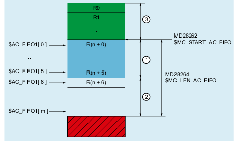
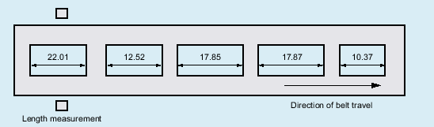

A FIFO variable provides a complex data structure based on R parameters. The data structure comprises one administration part and one net data part. The net data part is structured as a stack according to the FIFO principle (first in, first out). Using the index of the FIFO variables, the different functions are addressed in the administration part as well as the net data.
① | Administration part |
② | Net data part |
③ | R parameter range above the FIFO variables: Read and write permitted |
④ | R parameter range below the FIFO variables: Only read permitted |
| Note |
The statements regarding R parameters also apply to FIFO variables. See Chapter "R parameters ($R)". |
| FIFO data structure in the R parameters, starting from value in MD28262 $MC_START_AC_FIFO | ||
Data type: | REAL | ||
| Number of FIFO variables | ||
Data type: | INT | ||
Value range: | 1, 2, ... max. number (see additional information) | ||
| Index of the FIFO variables with which the various functions and data within the data structure of the FIFO variables is accessed. | ||
Value range: | 0, 1, 2, ... (MD28264 $MC_LEN_AC_FIFO - 1) | ||
Value | Meaning | ||
Administrative data | |||
0 | Write A value is written to the FIFO stack by assigning a value to the FIFO stack via index 0 ($AC_FIFO[ 0 ] = <value>). The assigned value is written to the next free location in the FIFO stack. If all memory locations in the FIFO stack are already occupied, an alarm is displayed:
Read A value is read from the FIFO stack by assigning the FIFO stack to a variable with index 0 (<variable> = $AC_FIFO[ 0 ]). The oldest value is read and then removed from the FIFO stack. Note
| ||
1 | Write / Read: The "oldest" net data is addressed; the FIFO stack is not changed | ||
2 | Write / Read: The "newest" net data is addressed; the FIFO stack is not changed | ||
3 | Read: Returns the sum of the values of all net data Enable via MD28266 $MC_MODE_AC_FIFO, bit 0 required. See paragraph below "Summation across all net data" | ||
4 | Read: Supplies the number of net data currently stored in the FIFO stack. Write: Reset to the initial state is realized by writing the value of 0 to FIFO variable, index 4. Example: | ||
5 | Read: Returns the current write index, relative to the beginning of the FIFO stack | ||
Net data | |||
6 | Write/read: The 1st field element of the net data range is addressed | ||
7 | Write/read: The 2nd field element of the net data range is addressed | ||
n | Write/read: The nth field element of the net data range is addressed | ||
More information List Manual System Variables | |||
The number of FIFO variables per channel is set using:
MD28260 $MC_NUM_AC_FIFO = <number of FIFO variables per channel>
The R-parameter, from which the range of FIFO variables for the channel begins, is set using:
MD28262 $MC_START_AC_FIFO = <number of the start R parameter>
| Note |
Free R-parametersOnly the R-parameters whose numbers are below the start R parameter of the FIFO variables, can be written to the NC program. |
The maximum number of field elements per FIFO variable is set using:
MD28264 $MC_LEN_AC_FIFO = <number of field elements per FIFO variable>
The total number of R parameters, which are required in the channel, is set using:
MD28050 $MC_MM_NUM_R_PARAM = | MD28262 $MC_START_AC_FIFO + MD28260 $MC_NUM_AC_FIFO * (MD28264 $MC_LEN_AC_FIFO + 6) |
The sum of the values of all net data is only provided via $AC_FIFO[ 3 ] if the function is activated via machine data:
MD28266 $MC_MODE_AC_FIFO, bit 0 = <value>
Value | Meaning |
|---|---|
FALSE | The sum of the values of all net data is not provided |
TRUE | The sum of the values of all net data is provided |
Serial determination of the length of workpieces that move past an automatic measuring station on a conveyor belt.
The measurement results are written to or read from the $AC_FIFO1 system variable via synchronized actions.
Read: With index 0, the "oldest" net data element is read and deleted from the FIFO stack.
Write: With index 0, the value is written to the next free net data element.